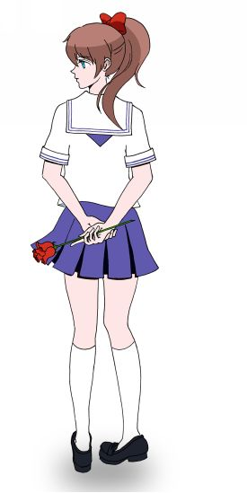
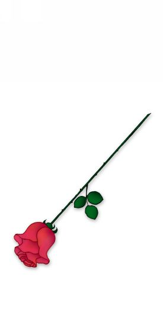
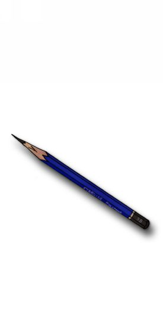

| だから薔薇には棘がある | |
| 森守 弥仁 | |
| (2015) | |
だからバラには棘がある ---前編---
■キャラクター紹介
水野 夏帆
本作の主人公。私立古楠大学附属高等学校(通称コナ高)に通う、ちょっとおっとりした性格の女の子。同じ一年生の浅葱湊とは幼馴染み。

浅葱 湊
夏帆の幼なじみの少年。パソコン部に所属し、タロットカードを使った占いアプリを開発。母の経営する喫茶店『BLUE CARBUNCLE』で公開したことにより、とある事件に巻き込まれた。
入江 紅子
夏帆の親友。夏帆と同じ美術部に所属すると同時にアニメ同好会にも所属し、湊の所属するパソコン部と部室を共有している。
根津 優
コナ高三年生で湊が所属する同じパソコン部の部長を務めている。謎の多い人物。
■Rosa alba■
最近、バイト先のロッカールームが、ちょっとした取り調べ室になっている。
といっても、半分は私の自業自得なんだけど。
「夏帆、今日も王子が来てるよ！」
「いいなぁ、私も彼氏欲しい！」
このあいだ私がBlogに変なことを書いたせいで、ただの幼なじみのみーくん、じゃなくてネギ、でもなくて浅葱湊くんが彼氏だって勘違いされちゃったから。
「だから、浅葱くんはただの幼なじみなんです！」
って、いくら言っても誰も信じてくれない。
そりゃあね、夏休み明けにある事件に巻き込まれそうになった時はちょっと興奮してBlogに「紫ジャージの王子様に助けてもらった」なんて書いちゃったけどね。でもすぐにBlog自体を閉鎖したし、そもそも私のBlogが学校やバイト先の人たちに読まれているなんて思ってもいなかったんだよね。それなのに次の日から教室でも部活でも、バイト先のロッカールームでも大騒ぎで、ホントびっくりだよ。
「またまたぁ、隠さなくてもいいんだよ？ ただの幼なじみが毎回バイト帰りに迎えに来るわけないじゃん」
「そうだよ、別に私たちに気を使わなくったっていいんだよ！ 私だって、後夜祭までには両思いになってみせるから！」
そう、騒ぎの原因の半分は明日から始まる文化祭『コナ高祭』のせいでもある。毎日準備に追われてクラスや部活の子と過ごす時間が増えれば、気になる人と急接近するチャンスも増えるわけだし、そうしたら誰かに相談したくなるわけだし......
だから、実は根掘り葉掘り聞かれているのは私だけじゃないんだけど。
でもでもでも、私のことは放っておいて欲しいの。だって、私とみーくんは幼稚園の時からずっと一緒の幼なじみなんだよ。急に好きとか嫌いとか、そんな話出来ないし。それにみーくん、じゃなくて浅葱くんは、私のことなんかより気になる人がいるんだもん。
「それじゃ、お先に失礼しまーす！」
「待ってよ夏帆！」
「話終わってないよ！」
仲間の追求を振り切って、裏口からバイト先を離脱する。
このお店『ベイカーズ』は制服が可愛いことで有名なファミリーレストランなの。パン屋さんが母体だから、おいしいパンとお値打ち価格のスイーツが高校生に大人気。お客さんとしても店員さんとしても私と同じ私立古楠大学附属高等学校、通称『コナ高』の生徒であふれていてすごく楽しい。
変な追及さえなければ、ね。
「はぁ......」
「よぉ。なんかあったのか？ ため息なんかついて」
お店の駐車場の、あんまり目立たない所にみーくんが立っていた。まるで今ちょうど通りかかったような顔をして。
別に、そんなに遅い時間じゃないし、そんなに治安が悪い場所じゃないし、 今まで迎えになんか来てくれてなかったから、ちょっと恥ずかしい。みんなに噂されるし。
だいたい、みーくんは私のこと、どう思っているんだろう。
「別に、何もないよ。お客さんが多かったから、ちょっと疲れただけ」
言えるわけないじゃん。みーくんのこと聞かれて大変だった、なんて。
「そっか」
「みーくんは？ 手伝い平気なの？」
みーくんの実家は学校の近くにある喫茶店『BLUE CARBUNCLE』を営んでいる。だからベイカーズはライバル店みたいなものなのに、家の手伝いもしないでこんなところに来ちゃって、いいのかな。
「母さんが「ちゃんと迎えに行きなさい」って怒るからさ」
「そっか......」
おばさんが言うから、なんだ。
なんか、ちょっと、うん......
そうだよね。みーくんが自分から言い出すわけないな、とは思っていたけど。
みーくんのとばっちりを受ける形で巻き込まれた事件によって、私はバイト先の駐車場、つまりまさに今いるこの場所で、美術品の違法コレクターに気絶させられたの。犯人はすぐに捕まって、身の危険は去ったはずなんだけど、みーくんのご両親はすごく心配して私を送り迎えするように言ったのよね。私は「もう大丈夫です」って、断ったんだけど、まだ事件から1ヶ月も経っていないから、みーくんには申し訳ないけど仕方ないのかな。
迎えに来てもらえるのはちょっと嬉しい。最近お互い部活が忙しくて、近所に住んでいてもなかなか会えないし、部活がない日も「まだ事件は終わってない」って言って、みーくんは独自の探索にのめりこんじゃってるし......
「早く帰ろ！」
「あ、おい！ なんだよ？」
私はみーくんを置き去りにするように早歩きした。
どうせすぐに追いつかれちゃうけど。
でも、もう知らない。
みーくんは私のことなんか別になんとも思ってないんだ。そう思ったら、悲しくなった。
周りは勝手に「付き合ってるんでしょ」とか「夏帆のことが好きに決まってるじゃん」とか言うけど。全然そんなの分かんないよ。
早く、追いついて何か言ってよ。
何でもいいから。早く、隣に来てよ。
ずっと後ろをついてくるみーくんにイライラしながら、私は自分から振り向くのを我慢していた。
あとどれだけ我慢出来るだろう...... そう思った時、みーくんよりも先にケータイが私を呼んだ。
「もしもし？ 紅子？ うん、今バイト終わったとこ。ごめんね今日、準備手伝えなくて......」
------「平気、大した準備じゃなかったし。それよりせっかくネギと二人のとこ、邪魔しちゃって悪いわね」
「え？ そんなわけないじゃん！」
親友の入江紅子は私と一緒の美術部に所属している。それと同時にみーくんと同じクラスで、しかもみーくんが所属するパソコン部と同じ部室と部員を分け合うアニメ同好会にも所属している。だから私とみーくんの両方をよく知っていて、私を冷やかす張本人でもある。その紅子は今、学校で明日から始まるコナ高祭の準備中。美術部は作品展示だけだから夕方にはほとんど設営が終わったけれど、クラスの出し物が忙しいみたい。それとも部活の方かな。
コナ高はイベントに全力を尽くす校風があるから、ホントはダメなんだけど、こっそり学校に泊まる生徒もいるんだって。
あれ？ クラスも部活も紅子と同じみーくんは、こんなところにいていいの？
------「......ちょっと部室まで来て欲しいんだけど。ねぇ、もしもし？ 夏帆？ 聞いてる？」
「あ、ごめん。ちょっとぼーっとしてた。それで？ 美術部の準備はもう終わってるよね？」
------「終わってるんだけど、ちょっと大変なことが起きてて...... あのね、夏帆の絵がないの」
紅子の用件は、みーくんへの呼び出しでも私に対するちょっかいでもなかった。
「ごめん、もう一回言って？」
------「だから。夏帆が書いたタロットカードの絵がなくなって、その代わりに赤いバラが置いてあるの！」
いつも冷静な紅子が電話の向こうで叫んでいる。
どういうこと？
全然意味が分からない。分かんないよ。
私の絵がなくなった...... なんて。
「夏帆、どうした？ 入江から電話なのか？」
みーくんがやっと私に追いついた。けど、それどころじゃない。
「紅子が...... 絵が、なくなったって言うの。タロットの絵がなくなって、代わりに赤いバラが置いてあったんだって」
全然うまく説明出来なくて、直接紅子と話してもらうようにケータイをみーくんに手渡す。
何かがちくりと胸を刺す。
紅子と話しながら、みーくんの顔つきが変わっていく。
さっき私と会った時には見せなかった顔。目が、キラキラしている。
電話しながら、だんだん足が速くなっていく。私が追いつけないくらいに。
私を迎えに来たくせに、置き去りにするつもり？
紅子との話が終わったら、絶対言うよね。
私が今、一番聞きたくない言葉を。
みーくんが今、一番気になっている人のことを。
「夏帆、怪盗だ！ 怪盗が現れたんだ！ 今度こそ捕まえるぞ！」
みーくんは走って行ってしまった。
私を置いて......
＊
最近、世の中では怪盗が流行っている。
流行っている、なんて言い方はおかしいかもしれないけど。犯行現場に赤い薔薇を残したりトランプのカードを残したりメッセージを残したりする泥棒が増えていて、最近はテレビで特番が組まれるくらいだから、やっぱり流行っているんだよね。
そんな怪盗が、私たちの街にも現れたの。
新聞記事によると、画廊のオーナーが自宅に保管していた絵画を盗んだことになっている。だけどそのオーナーの人は贋作を本物だと偽って販売していることが発覚して、テレビでは怪盗を擁護する意見が出ていたりもする。
こういうのを見ていると、本当のことは実際に経験した人じゃないと分からないんだな、って思う。
怪盗に盗まれた絵画というのは大きな額装の作品じゃなくタロットカードのことで、しかも印象派の巨匠ミュシャ直筆の作品だった、という事実はテレビも新聞も週刊誌でさえ発表されていない。その事件の裏で私とみーくんが巻き込まれ、特にみーくんは意識不明で入院したことも。
それは私たちがマスコミに晒されないための配慮かもしれないけど、ニュースを見るたび聞くたびに、なんだか複雑な気分になる。私とみーくんを助けてくれたのは学校の先輩で、しかもその人がタロットカードを探していたなんて、本人はバイトだって言うけど怪しすぎるでしょう。
おかげでみーくんは部活の先輩、根津先輩のことを怪盗だと思い込んで追いかけているの。
根津優先輩。
先輩はちょっと変わっている人。
私から見ても女の子にしか見えないような可愛い顔をしているけれど、先輩は男子。そしてみーくんの話では意外と力があるらしい。
らしい、っていうのは、先輩は私の部活の先輩ではなくみーくんが所属しているパソコン部の先輩だから。私が直接話をしたのは、こないだの事件の時、一度きり。
だけど。
初めて会ったあの時に見たあの微笑みはとても印象的だった。
少し憂いを帯びたような、慈愛に満ちたような、それでいて何かを訴えたいような、とても普通の男子高校生が浮かべる表情とは思えない複雑な笑顔だった。
根津先輩は、たぶん何かを抱えている。
何か、とても大きな秘密を。
みーくんは先輩のことを怪盗だと思っているけれど、私はなんとなく違う気がしている。
それが一体なんなのか、部外者の私には分かりっこないのだけれど。
......なんて。考えながら歩いていたら、あっという間に学校に着いちゃった。
みーくんはみーくんで、やっぱり一人で考え込んでるし。
紅子に言ったら、また笑われるんだろうな。「せっかく二人きりなのに何も喋らないなんて馬鹿なんじゃないの」って。
まぁ、終わったことは置いといて。本当に私の絵が盗まれたのか確かめに行かなくちゃ。
「みんなまだ準備してるんだね」
夜の学校は真っ暗で薄気味悪い。
というのは普段のこと。今夜は遅くまで続いている文化祭準備のせいで煌煌と明かりのついた教室が昼間のように賑わっている。
私とみーくんが校門からの坂道を上ると、美術室は四階にあるというのになぜか昇降口の前で紅子が待っていた。
「わざわざ下で待っててくれたの？ ごめんね紅子」
「ううん、全然。さすがに一人で美術室の前にいるのはあまりにも暇だったし、クラスの男子が抜け出して準備が捗らなかったから運動を兼ねて降りてきただけ」
と言ってちらりとみーくんに視線を向ける。
紅子とみーくんは同じクラスだから、つまり......
「ご、ごめん！」
私の顔が真っ赤になっていくのが分かる。
なのに、みーくんは全く気にしてない様子で「早く行こう」と急かす。
鈍感！ あ、でも気づかれちゃっても困るけど。
「冗談だってば、夏帆。それより、美術室の鍵を借りる時に二年のジェンヌに会えたよ。眼福、眼福！ あの人、コナ高祭実行委員だったんだね」
階段を上りながら紅子がうっとりした顔を見せる。
私は息切れして酸欠気味の脳を働かせようとするけれど、面白いツッコミは全然浮かばなかった。
「ジェンヌ？」
「夏帆、知らないの？ 二年生の有名な女子なんだけど......」
紅子は本当に情報通だなぁ、と感心してしまう。同じ学年の子でさえも６百人以上いるから、私は他の学年の人なんて部活の先輩くらいしか把握していないのに。
「おーい！ そんなことより早く鍵開けてくれよ！」
先を歩いていたみーくんが、美術室に辿り着いて鍵をがちゃがちゃ鳴らした。
紅子が仕方なさそうに話をやめ、扉の鍵を開ける。
中に入った瞬間、何が起きたのかが分かった。

甘いバラの香りが広い部屋中に充満していたから。
そして、床にぽつんと置かれた真っ赤なバラが、たった一輪なのに鮮やかな色をさしている。
夕方、展示の準備が終わった時は壁一面みんなの絵で埋め尽くされていた。けれど。
今は一隅、私が絵を飾った場所だけが、歯抜けのように壁が剥き出しになっていた。
「ホントだ......」
それしか言葉に出来なかった。
でも、なぜ？
なんで私の絵なんかを持っていくの？
絵の代わりなのか、床に置かれた赤いバラはあの時、私がバイト先の駐車場で眠らされた時に持っていたのと同じ香りがする。
だからといってこの花が、テレビで騒がれている怪盗の残した物かどうかは分からない。
むしろ、ただのいたずらの可能性の方が高い。
「......ちょっと待って。なんかおかしいよ」
壁を眺めていて気がついた。
私の絵は全部が盗られたわけじゃなかったの。
残っているのは九枚。よく見ると、それらは私が拾ったタロットカードを摸写したものばかりだった。
夏休みに道端でカードを拾った時、なんて綺麗な絵だろうと思って真似して描いてみたの。その時からミュシャの絵に似ていると思っていたけれど、まさか本物だとは思わなかった。後から調べてみても、ミュシャがタロットカードの絵を描いた、なんていう話はどこにも出てこない。もしかしたら偽物なのかもしれない、なんてことも考えたけど、本物だとか偽物だとかそんなことは関係ないくらいあの絵は素敵だった。
タロットカードは二十二枚の大アルカナと五十六枚の小アルカナに分かれていて、占いに使われるのはほとんど大アルカナの方なんだって。私が拾ったのはそのうちの九枚だけで、残りの絵は見ることが出来なかったの。だけど、せっかく文化祭で展示することに決まったなら、二十二枚揃えたくなるものじゃない？ だから私は市販のタロットカードの絵柄を見ながら他の絵も描いてみた。自分ではそれなりに描けたつもり。
でも待って。模写が気に入らなくて持って行かれるなら理解出来なくもないけれど、私が自力で描いた方がなくなっている理由が分からないよ。
「私が想像して描いた絵だけがなくなってるのは、どういうこと？」
「そうか、他の絵も描いてたのか。俺の見たことがあるカードが全部残ってるのに一体何を盗まれたんだろう、って思ってたんだ」
美術に興味がないみーくんでさえミュシャのタロットカードを気に入って『占いアプリ』を作ったくらいだから、流石に絵柄も覚えていたみたい。そのカードのせいで画廊のオーナーに襲われて入院する羽目になったわけだから、よけい印象深いのかもしれない。
高校でパソコン部に所属しているみーくんは、本人曰く一番簡単なプログラミングの本に書いてある簡単なプログラムで動くアプリケーションを作るネタを探していたんだって。その時に偶然私がタロットカードを拾ったことで『占いアプリ』を作ることを思いついたらしいの。
出来上がった占いアプリは「探し物は何ですか？」って書かれている画面に単語を入力するとタロットカードがランダムに表示されるという本当に単純な仕組みなんだけど、みーくんのお母さんが経営している喫茶店で公開されていて意外と人気がある。事件のあと、アプリの公開をやめるかどうか迷ったけど、結局今も続けているの。
事件そのものは終わったんだし、タロットカードのことも、ましてやアプリのことも世の中の人は誰も気づいていないから大丈夫、ってことで。
模写以外のカードについては全部描いてからみーくんに見せるつもりだったのに、コナ高祭の準備期間に突入してそのまま忘れていたの。
「コナ高祭が終わったら言おうと思ってたんだ」
「うん．．．．．．」
やっぱりみーくんは上の空。もぉ。
「俺、ちょっと部活に顔出してくる」
「え？ ちょっと待ってよ！」
私の声に振り向きもせず、みーくんはパソコン部に向かってまっすぐ走って行っちゃった......
やっぱり。
私の絵がなくなったのも根津先輩のせいだと思っているんだ。
でも、なんとなくだけど、それは違うんじゃないかな。
って、私は思うの。
だって。
先輩はみーくんに『怪盗かもしれない』って疑われてるんだよ。
もし私が先輩なら、わざわざ校内で、しかも私の絵を盗んだりなんかしない。
それに、みーくんは自分で「根津先輩は絵画には興味がない」って言ったくせに。
「入江は夏帆と一緒に帰っていいぞ。どうせアニ同の準備で残ってだんだろ？」
「まぁそうね。クラスの出し物なんて小物の販売だけだから、昨日までに全部用意出来ちゃってるし」
紅子は私と同じ美術部所属だけど、同時にアニメ同好会にも所属している。
そのアニメ同好会はみーくんの所属するパソコン部と同じ部室で活動していて部員も共有しているから...... じゃあ、やっぱり準備の遅れは私をバイト先まで迎えに来たせいだったの？
「ホントに紅子は行かなくて大丈夫なの？」
「やだ。まだ自分のせいだとか思ってるの？ 部活の準備が遅れてるのは男子の衣装が決まらないだけで、あとは全部終わってるから心配しないでよ」
「そ、そうなんだ。良かった」
ホッとした。
紅子は気を使って嘘をついたりするタイプじゃないから、本当に準備は終わってるんだと思う。
出し物はなんだっけ。喫茶店だったかな。
「女装カフェっていうところまでは決まったんだけど、なんの女装にするかまだ揉めてるみたいよ。先輩たちがありったけ衣装を集めてきて、決まるまで帰れないんだって」
「先輩って、根津先輩？」
根津先輩は化粧も何もしなくても女の子と間違えてしまうほど中性的な顔立ちで、噂によると去年の文化祭では女装姿が評判だったらしいけど。
「根津先輩はコスプレに興味ないっていうか、ホントはやりたくないんだって。それなのに、いつの間にかまた女装に決まっちゃったから怒ってるの。ネギも、元々アニ同には名前を貸してるだけのようなものだから、女装はやりたくないみたいよ」
確かに。あのみーくんが女装するなんて、想像がつかないよ。
「あの二人、やっぱり気になるでしょ」
紅子が悪い顔をして笑う。
「え？ ぜ、全然気にならないもん！」
気にさせようとしているのは紅子でしょ。
あの二人は怪しいとか、早くしないと手遅れになるとか......
そうじゃなくて。
私、べ、別に、みーくんのことなんか、全然気にしてないんだから！
ただの幼なじみなんだからね！
ほら、紅子は私の反応を見てずっと笑ってる。
「夏帆もネギも反応がソックリだから面白いよね」
「意地悪！」
「早く告白しちゃえばいいのに」
もう！ もう......
ずっと幼なじみだったから、いつから好きになったのか、そもそもこれは本当にみーくんのことを好きなのか、そんなことも分からないんだよ。
って、紅子に言ったら「はいはい」って軽くあしらわれちゃったけど。
紅子は誰か好きな人いないのかなぁ。
どうせ聞いても教えてくれないんだよね。
このあとも私が一方的にからかわれながら、歯抜けになった絵を並べ直して学校を後にした。
結局、みーくんたちがどんな衣装に決まったのかは知らない。
＊
消えた私の絵と引き換えに置かれていた赤いバラは、私の部屋を甘い匂いで満たしていた。美術室に置き去りにするにはあまりにも綺麗で、だけど、自分勝手に他人の作品を持ち去った主人にぴったりの高慢そうなな赤いバラ。
その不遜なバラが振りまく不遜な香りに満ちたその部屋で、私はお風呂上がりの濡れた髪を乾かすことも出来ないまま立ち尽くしていた。
私がバラを持ち帰ったのに水もあげずにいたことを思い出して花瓶に入れようとした時、くったりした花がうなだれて、その中からすごく小さなＵＳＢメモリが落ちてきたの。
花びらの中にこんな小さなＵＳＢメモリが...... じゃなくて。
赤いバラの中に仕込まれていたなんて、いたずらにもほどがある。
どう考えても私に対するメッセージ、そんなわけないよね。
だって、私。ただの高校生なんだよ。
たまたま拾ったタロットカードが有名な画家の作品だっただけで、それを模写した私は名もなき美術部員。そんな私に怪盗が、一体なんの用があるっていうの？
事件だって終わったはずだよね？
テレビも新聞も、怪盗がまた別の店を襲った事件で盛り上がっている。
なのに、なんで私の絵が盗まれたりバラの中にＵＳＢメモリが入っていたりするの？！
......どうしよう。私、誰かと間違われているのかな？
それとも、このあいだ捕まった画廊のオーナーとは別の真犯人がいるのかな？ その真犯人はタロットカードが回収されたことに気がついていないとか？
一体誰に相談すればいいんだろう。
みーくんに話したら、絶対怒られるし。ＵＳＢメモリも取り上げられちゃう。
誰かに話す前に中身を見ちゃえばいいのかもしれないけど、やっぱり不安......
髪を乾かして、ホットミルクを一口飲んで、深呼吸して。
それから、電話が繋がるのを待った。
「もう寝ちゃった？」
------「ん。起きてるよ」
と言う紅子の声はすごく眠そうだったけれど。
「ちょっと聞きたいことがあるんだけどさ。知らない人から渡されたＵＳＢメモリは、やっぱり開かない方がいいよね」
------「そりゃあ、パソコンを壊したくなければ、普通は開かないでしょ」
「そう、だよね......」
聞く前から紅子の答えは分かっていた。
やっぱり、このまま捨てちゃった方がいいのかな。それとも警察に届けた方がいいのかな。
------「それで？ 誰から渡されたの？ 知らない人って言ってるけど、本当は分かってるんでしょ？」
さすが紅子、鋭い。
「分かってるっていうか、さっき美術室に落ちてたバラの中に入ってたの」
------「バラの中？！ じゃあ、怪盗からのプレゼントじゃん！」
紅子が布団から起き上がる音が電話越しに聞こえた。
確かに、気になるよね。赤いバラの怪盗から送られたものだもんね。
「プレゼントじゃないよ。絵が盗られたんだよ？ それに、本物の怪盗かどうか分からないし......」
------「でもさ、見てみたいから私に電話したんでしょ？」
まぁ、バレるよね。
見たい。見たいよ。でも不安なの。
------「大丈夫。私だったらウィルスをバラまくのにそんな面倒なことしない。中身を見てみなよ！」
紅子の声が生き生きしている。
私も、逆の立場だったら同じことを言っていると思う。
もしＵＳＢメモリを挿したことでＰＣが壊れちゃったら困るけど。みーくんだったら「絶対ダメだ」って言うと思うけど。
でも...... 好奇心には勝てない。
私は電話の向こうで紅子が見守る中、ＵＳＢメモリをＰＣに挿してみた。
チカチカとランプが点滅してデスクトップにＵＳＢメモリのアイコンが現れる。今のところ、パソコンに変化はないみたい。でも、フォルダを開いて、もしその中にウィルスが仕込まれていたら、このパソコンは壊れてしまうかもしれない。
どうしよう...... なんて。どうするもこうするも、もし壊れちゃったらその時はその時だよ。
一呼吸置いて、私はフォルダを開く。
小さめの窓の中にたくさんのファイルが表示される。
サムネイルを見ただけで、すぐに分かった。
私が拾ったタロットカードの本物が一揃い、写真で収められていた。
------「本物？！ じゃあ、やっぱりホントに怪盗からのプレゼントだったんだ！」
「紅子ってば、興奮しすぎ！ 本物っていっても、本当にミュシャが描いたかどうかは分からないんだよ」
------「そうだけどさ、少なくとも、タロットカードの本物っていうのは確かなんでしょ？ だったらすごいじゃん！」
「そ、そうだよね」
内心、私も興奮していた。
だって。本物の絵を見たいって、ずっと思っていたんだもの。
今まで誰も知らなかったミュシャのタロットカードが画面の中にある。専門家が本物だって認めるとか認めないとか、そんなことは関係ない。私はあの絵を見た時、すごくドキドキした。返さなくてもいいなら、本当は返したくなかった。
その絵を、写真とはいえもう一度見ることが出来るなんて。
「ホントすごいよ。だって、怪盗が夏帆に「描け」って言ってるんでしょ？」
紅子の言葉に私は驚いた。
そうか。
これはプレゼントなんかじゃない。挑戦状なんだ。
「私、受けて立ってみる。文化祭の間に描けたら、また見てくれるかな？」
「やる気じゃん！ そりゃあ、見に来るに決まってるでしょ。文化祭なら一般の人だって堂々と学校に入れるし。もしかして、挨拶に来てくれちゃうかも？」
「さすがにそれはないでしょ。でも、文化祭中に飾れるように描いてみる」
「楽しみにしてるよ。夏帆、頑張ってね！」
電話を切って、私はすぐに紙を用意した。
私が持っている、とっておきのワトソン紙。大きい紙を少しずつ切りながら、先に描いた九枚のタロットカードももちろんこの紙。少し黄色っぽい紙の色が絵に深みを出してくれる、気がする。他の絵にも使っていて、残りわずかの大事な紙。買い足せないほど高価なものじゃないけれど、時間的な限界もあることだし、できれば一気に描き上げたい。
もう深夜を過ぎていたけれど、眠くない。寝られるはずがない。
描いてやろうじゃないの。
なんて意気込むまでもなく、気づいたときにはステッドラーの３Ｂを研ぎ始めていた。

■Rosa gallica■
通学カバンの重さが肩にずしりとのしかかる。小さいとはいえ、十三枚も額装の絵が入っているのだから仕方ない。
大切な絵だから落とさないように、他の誰にも見られないように、カバンのファスナーを閉めてしっかり脇に抱え直して人がまばらな江ノ電の車内に乗り込んだ。
持ち手を握りしめると指先がじくりと痛む。
急いでバラの棘を処理したせいで少し指を切ってしまったのだ。小さな傷なのに、思いのほか深いらしい。赤いしずくが膨れてきたのを舐めとって、絆創膏で塞いでもしばらくジンジンした。
なぜこんなことをしたのか、自分でもよく分からない。
なぜ人が描いた絵を勝手に持ってきてしまったのか。
ただ、美術室で偶然この絵を見つけた時、衝動的に思ってしまった。
この絵を人に見せてはいけない、と。
ミュシャのタロットカードを模写したということは、過日の事件に関わったということだ。あの事件はもう解決済みだから絵を展示しても危険はないだろうし、ミュシャの著作権はすでに消失しているから模写をしても問題はない。
そんなことが理由じゃない。
模写された絵が悪いわけじゃない。むしろよく描けていると思う。おそらく拾ってすぐの勢いで描かれたであろう十枚弱の絵は、本物を見たときの感動が伝わってくるような筆の流れがあって素敵だと思う。その後、想像して描かれた残りの絵は、構図が甘くミュシャの他の絵を資料としていることが容易に分かるものの真剣に向き合ったことが伝わってくる。
でも......
色がダメだ。塗る時に迷ったのだろう、濁って淀んで沈んでしまっている。そのため模写したカードと作者が想像して描いたカードの完成度に差がありすぎた。
そんな絵を、たとえ高校の文化祭という小さな催しの中だとしても展示して人の目に晒すなんて。
自分だったら考えられない。そんなことをするくらいなら、全部破り捨てた方がマシだ。
居ても立ってもいられなくて、理由をつけて急いで家に帰ると本当のミュシャのタロットカードを一枚ずつ写真に撮り、マイクロＵＳＢメモリに保存した。
メモリをどうやって渡そう。あの絵を描いた本人に、確実に届くように。
いつも現場に残している赤いバラを手に取ると、ＵＳＢメモリが花の中に入りそうだと気がついた。カップ咲きのオールドローズだから良かったものの、これが高芯咲きのモダンローズだったら隠せなかっただろう。
すぐに学校に戻って、美術部が完全に撤収したことを確認して、想像で描かれたタロットカードの絵を持ち去った。
マイクロＵＳＢメモリの存在に気づいてくれるだろうか。
バラの中にすっぽり入り込んでいるせいで、気づかずに捨てられてしまってはいないだろうか。
いや、そうではなく。
こちらのメッセージの意味に気づいてくれただろうか。本物の絵を見て、模写の素晴しさと完全なオリジナルとの差を理解してくれるだろうか。
......じゃなくて。
違う。
見て欲しかったのだ。彼女に。
本当のミュシャのタロットカードの絵を。
あの絵の素晴らしさを。
こんなことをしなくても、伝えられる方法が他にもあったかもしれない。
悪いことをした、そんなことは最初から分かっている。
分かっている。分かっている。でも。
でも、正体を知られるわけにはいかない。
「ごめん」
揺れる江ノ電の中で、一人つぶやく。
この絵は明日返そう。明日の朝、他の誰も気づかないうちに。
いや、やっぱりマイクロＵＳＢメモリの中身を見たかどうか確認してからの方がいいだろうか。
今さら返しても、人の物を持ち去った罪は消えないけれど。
後編へ続く
あとがきという名の次回予告。
初めましての皆さまも、もしかしたらすでに別の作品を読んでくださった皆さまもこんばんは！ 拙作を読んでくださってありがとうございます！
都合により前後編となってしまって申し訳ありませんが『だから薔薇には棘がある 前編』はお楽しみいただけましたでしょうか？ 後編もなるべく早くお見せ出来るように頑張りますので、少々お待ち下さい。
前編のための特典を用意することは出来ませんでしたが、前作『そして愚者微笑んだ』で用意した特典をご紹介します。こちらも良かったら見てみてくださいね。この『だから薔薇には棘がある』をより楽しめると思います。
パスワードは『6833』です！ 他の人には秘密ですよ♪
特設ページ１
http://blog.livedoor.jp/morris_novel/archives/1007148584.html
特設ページ２
(こちらは現在『だから薔薇には棘がある』の冒頭が書かれているのみですが、いずれ充実させたいと思っています)
http://blog.livedoor.jp/morris_novel/archives/1027571642.html
『そして愚者は微笑んだ』発売時に作成した動画もあります。
https://youtu.be/93_vtHDFqxE
それでは改めましてありがとうございました！
２０１５年 師走
森守 弥仁
【作品集 GIFT BOXシリーズ】
ごめんねアニー
http://www.amazon.co.jp/dp/B00EORJU7E
君のいない午後
http://www.amazon.co.jp/dp/B00FLSHRO8
たったそれだけのこと
http://www.amazon.co.jp/dp/B00FXYNY0Q
君を想って月を見る
http://www.amazon.co.jp/dp/B00MRVSAC0
【作詞指南書】
作詞家への裏道navi 体験版
http://www.amazon.co.jp/dp/B00IM787CQ
作詞家への裏道navi 初級編
http://www.amazon.co.jp/dp/B00RI0DW4Q
【HP】
http://kotobanova.com
【Twitter】
http://twitter.com/Morris_novel
奥付
発行日 平成27 年12月12日
著者 森守 弥仁
企画・制作・発行 森守 弥仁
（本の内容に関するお問い合わせ先）
mail: morris.novel@gmail.com